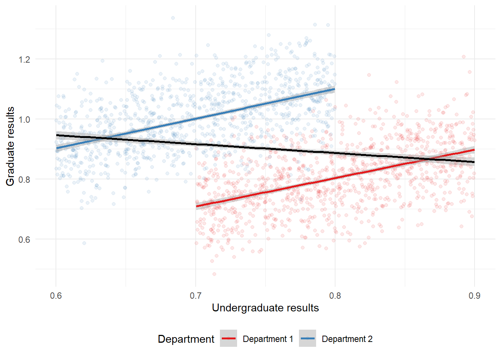
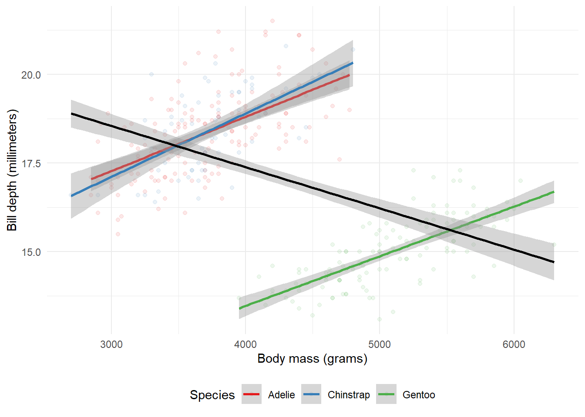
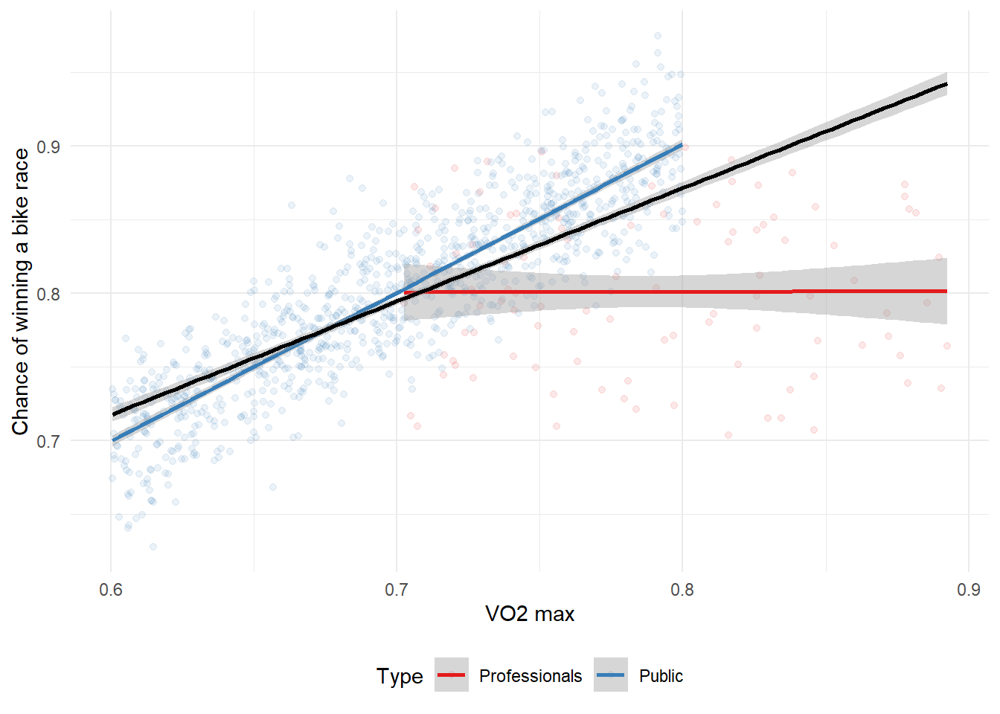

digraph D {
node [shape=plaintext, fontname = "helvetica"];
a [label = "Income"];
b [label = "Happiness"];
c [label = "Education"];
{ rank=same a b};
a->b;
c->{a, b};
}
digraph D {
node [shape=plaintext, fontname = "helvetica"];
a [label = "Income"];
b [label = "Happiness"];
c [label = "Education"];
{ rank=same a b};
a->b;
c->{a, b};
}
library(tidyverse)── Attaching packages ─────────────────────────────────────── tidyverse 1.3.2 ──
✔ ggplot2 3.4.0 ✔ purrr 0.3.4
✔ tibble 3.1.7 ✔ dplyr 1.0.99.9000
✔ tidyr 1.2.0 ✔ stringr 1.4.1
✔ readr 2.1.3 ✔ forcats 0.5.2
── Conflicts ────────────────────────────────────────── tidyverse_conflicts() ──
✖ dplyr::filter() masks stats::filter()
✖ dplyr::lag() masks stats::lag()set.seed(853)
number_in_each <- 1000
department_one <-
tibble(
undergrad = runif(n = number_in_each, min = 0.7, max = 0.9),
noise = rnorm(n = number_in_each, 0, sd = 0.1),
grad = undergrad + noise,
type = "Department 1"
)
department_two <-
tibble(
undergrad = runif(n = number_in_each, min = 0.6, max = 0.8),
noise = rnorm(n = number_in_each, 0, sd = 0.1),
grad = undergrad + noise + 0.3,
type = "Department 2"
)
both_departments <- rbind(department_one, department_two)
both_departments# A tibble: 2,000 × 4
undergrad noise grad type
<dbl> <dbl> <dbl> <chr>
1 0.772 -0.0566 0.715 Department 1
2 0.724 -0.0312 0.693 Department 1
3 0.797 0.0770 0.874 Department 1
4 0.763 -0.0664 0.697 Department 1
5 0.707 0.0717 0.779 Department 1
6 0.781 -0.0165 0.764 Department 1
7 0.726 -0.104 0.623 Department 1
8 0.749 0.0527 0.801 Department 1
9 0.732 -0.0471 0.684 Department 1
10 0.738 0.0552 0.793 Department 1
# … with 1,990 more rowsboth_departments |>
ggplot(aes(x = undergrad, y = grad)) +
geom_point(aes(color = type), alpha = 0.1) +
geom_smooth(aes(color = type), method = "lm", formula = "y ~ x") +
geom_smooth(
method = "lm",
formula = "y ~ x",
color = "black"
) +
labs(
x = "Undergraduate results",
y = "Graduate results",
color = "Department"
) +
theme_minimal() +
scale_color_brewer(palette = "Set1") +
theme(legend.position = "bottom")
library(palmerpenguins)
penguins |>
ggplot(aes(x = body_mass_g, y = bill_depth_mm)) +
geom_point(aes(color = species), alpha = 0.1) +
geom_smooth(aes(color = species), method = "lm", formula = "y ~ x") +
geom_smooth(
method = "lm",
formula = "y ~ x",
color = "black"
) +
labs(
x = "Body mass (grams)",
y = "Bill depth (millimeters)",
color = "Species"
) +
theme_minimal() +
scale_color_brewer(palette = "Set1") +
theme(legend.position = "bottom")Warning: Removed 2 rows containing non-finite values (`stat_smooth()`).
Removed 2 rows containing non-finite values (`stat_smooth()`).Warning: Removed 2 rows containing missing values (`geom_point()`).
set.seed(853)
number_of_pros <- 100
number_of_public <- 1000
professionals <-
tibble(
VO2 = runif(n = number_of_pros, min = 0.7, max = 0.9),
chance_of_winning = runif(n = number_of_pros, min = 0.7, max = 0.9),
type = "Professionals"
)
general_public <-
tibble(
VO2 = runif(n = number_of_public, min = 0.6, max = 0.8),
noise = rnorm(n = number_of_public, 0, sd = 0.03),
chance_of_winning = VO2 + noise + 0.1,
type = "Public"
) |>
select(-noise)
professionals_and_public <- rbind(professionals, general_public)
professionals_and_public# A tibble: 1,100 × 3
VO2 chance_of_winning type
<dbl> <dbl> <chr>
1 0.772 0.734 Professionals
2 0.724 0.773 Professionals
3 0.797 0.772 Professionals
4 0.763 0.754 Professionals
5 0.707 0.843 Professionals
6 0.781 0.740 Professionals
7 0.726 0.803 Professionals
8 0.749 0.750 Professionals
9 0.732 0.890 Professionals
10 0.738 0.821 Professionals
# … with 1,090 more rowsprofessionals_and_public |>
ggplot(aes(x = VO2, y = chance_of_winning)) +
geom_point(aes(color = type), alpha = 0.1) +
geom_smooth(aes(color = type), method = "lm", formula = "y ~ x") +
geom_smooth(method = "lm", formula = "y ~ x", color = "black") +
labs(
x = "VO2 max",
y = "Chance of winning a bike race",
color = "Type"
) +
theme_minimal() +
scale_color_brewer(palette = "Set1") +
theme(legend.position = "bottom")
DiagrammeR::grViz("digraph {
graph [layout = dot, rankdir = TB]
node [shape = oval]
rec1 [label = 'Wake up early']
rec2 [label = 'Read Books and learn R']
rec3 [label = 'Minimizing social media']
rec4 [label = 'Persona/Professional/Family Life']
rec5 [label = 'New Year Resolution']
# edge definitions with the node IDs
rec1 -> rec5;
rec2-> rec5;
rec3-> rec5;
rec4-> rec5
}",
height = 500)digraph D {
node [shape=plaintext, fontname = "helvetica"];
a [label = "Wake up early"];
b [label = "Read Books and learn R"];
c [label = "Minimizing use of social media"];
d [label="Personal/Professional/Family life"];
e [label="2023 Resolution"];
{ rank=same a b c d};
a->e;b->e;c->e;d->e
}